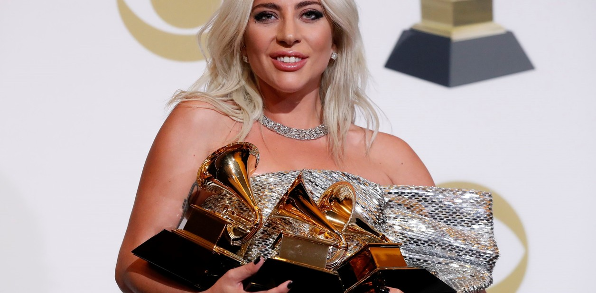

Lady Gaga, nacida como Stefani Joanne Angelina Germanotta en Nueva York (1986), es una aclamada cantante, compositora, actriz y activista.
Revolucionó el pop desde su debut con The Fame (2008) y éxitos como "Poker Face", por su estilo excéntrico, versatilidad musical, premios Grammy y Oscar,
además de su firme defensa de la comunidad LGBTQ+ y la salud mental.

Lady Gaga (Stefani Germanotta) estudió música y arte en la Tisch School of the Arts de la Universidad de Nueva York (NYU),
donde ingresó a los 17 años.
También se formó en el Convento del Sagrado Corazón en Manhattan y estudió actuación durante diez años
en el Instituto de Teatro y Películas Lee Strasberg.
Premiaciones